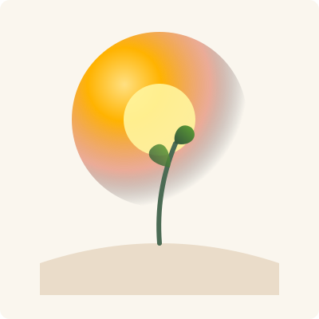
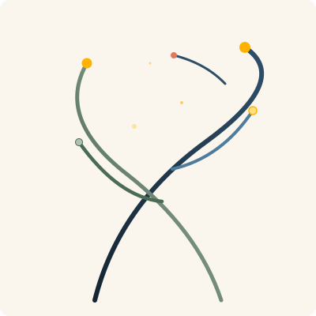
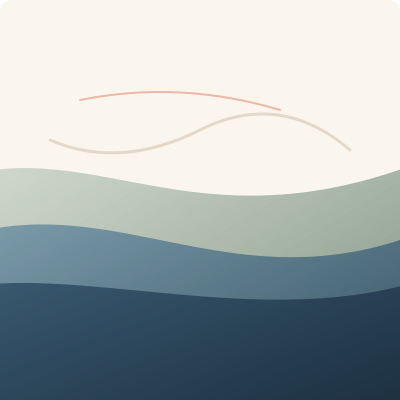
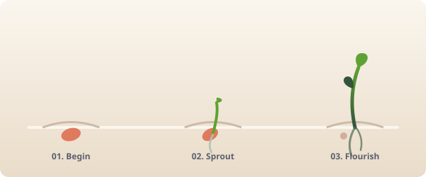
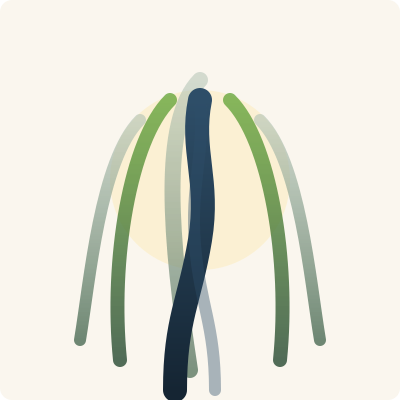

Understanding is
where we begin.
Growing up means figuring out who you are. We take the time to understand that journey, and we build our support around it.


Most parents reach out because they see a deep, complicated struggle.
As a parent, you want to give your teenagers and emerging adults the tools to stand on their own. Yet, when they encounter challenges that seem beyond their ability, there is a real fear of seeing them get stuck.
You want to step in and help, but you do not know how. That feeling of helplessness is not a sign of failure—it is a sign that your teen is transitioning into adulthood. We partner with you to help them bridge that gap, giving your young adult a secure space to step away from expectations.

"I want them to know I support them, whatever they decide to do. I just want them to be okay."
"I am worried about this next transition and I do not know how to help them through it."
"Something changed and I cannot tell if it is a phase or something more."
"I keep wondering if I should have seen this sooner."
"Every option in front of us feels like the wrong one."

Beautifully complicated emerging adults.
Teens and young adults of unique strength and complexity, carrying far more than the people around them realize. Some carry diagnoses; many do not.
Our neuro-affirming focus centers on identifying their specific processing profile and building tailored skills rather than attempting to enforce behavioral assimilation.
01 Identity Development
Figuring out who you are before you fully know who you want to be. Belonging, self-worth, and the weight of becoming.
02 Young Adult Transitions
College, first jobs, leaving home. Early adulthood carries real weight. We navigate with clarity.
03 Direction & Motivation
For young people with unique, unrecognized strengths who find themselves stuck. Bringing pictures into focus.
04 Neurodivergent Youth
Working through a neurodevelopmental lens. Individual processing style is where understanding starts.
05 Safe Expression
A space outside every other context. Safe container for questions they are not ready to ask family or peers.
06 Professional Support
Recognizing and treating anxiety, depression, OCD, executive skills, and suicidal ideation with clinical depth.
Developmental, relational, & neuro-affirming.
We look at the big picture. We support young people in understanding how they work, building trust, and moving forward on their own terms.

How We Help
Every person arrives with their own way of taking in the world. Understanding that is the starting point for everything we do. We help young people develop their own lens for understanding themselves. The goal is genuine self-knowledge, and the confidence that grows from it.
Get to know them
Before knowing how to help, we need to know the person. How they think. What matters to them. Where they feel most like themselves and where they feel furthest from it.
Build a real relationship
We give the relationship time to root. We sit outside family, school, and peer life. A space where the parts of themselves they are still figuring out how to hold can come forward safely.
Shape the support to fit
Once we understand how someone works, we build from there. Mentoring, skill building, self-exploration, all of it tuned to this specific young person.
Develop identity and purpose
The heart of the work. Helping a young person settle into who they are, find their own motivation, and build a sense of self that holds over time.
Address what gets in the way
When anxiety, depression, or other struggles are blocking growth, we address them as part of the larger picture, in service of the foundation we are building together.
"Every person makes sense. The work is learning how."
Professional Partnerships
We believe that supporting a young person works best when we respect the ecosystem already around them. We coordinate care smoothly to ensure continuity.
For Clinical Providers
We offer collaborative, relational care for therapists, psychiatrists, and pediatricians. We provide a steady, neurodiversity-affirming space for individuals navigating key life transitions, making it easy to team up and support your clients together.
For Educators & Schools
We partner with school counselors, psychologists, and consultants to coordinate daily school support. We help students build practical skills, organize their routines, and manage complex transitions so they can find their footing in the classroom.
Collaborative care,
shared grounding.
We pair dedicated, highly active relational counseling with senior clinical oversight, ensuring every family receives the best of both worlds.

Johnny Spangler
Johnny Spangler sees counseling as a supportive space built on warmth, authenticity, and respect for how individuals experience the world. His role as an educator, supervisor, and workshop leader shapes how we approach care at Spangler Counseling Group. Our framework incorporates foundational neuro-affirming practices, recognizing the absolute uniqueness of every person's internal reality.

Sean Flikke
For nearly three decades, Sean Flikke has worked alongside neurodivergent and marginalized young people in schools, athletic spaces, and counseling. His clinical experience includes behavioral health, psychosocial assessment, and tailored counseling for ADHD, autism, anxiety, and executive skill development.
Why this structure works:
By pairing Sean's direct caseload availability with Johnny's senior clinical backing and weekly supervision, families receive a powerful combination: a counselor with the dedicated energy to show up for your teen, completely supported by the expertise of a regional leader in neurodevelopmental graduate training.
Ready to find their footing?
We make the starting process clear and straightforward. Read through FAQs, fee structures, and reach out when you're ready.
Initial Consult
A free 20-minute consult call to discuss what you're noticing and assess compatibility.
Developmental Intake
An in-depth session where we establish processing styles, history, and tailored goals.
Relational Sessions
Ongoing individual sessions with Sean, fully backed by Johnny's oversight.
Rate Structure
We support families with transparent, professional rates for our clinical services.
20-minute phone consult call to discuss compatibility and goals.
60-minute developmental intake and profile assessment mapping.
50-minute individual relational and skill session with Sean (supervised).
Questions Parents Ask
You do not have to figure this out alone.
Tell us a little about what is going on. We will follow up honestly about how we can support your teen or young adult. If our collaborative practice is not the right fit, we will gladly point you to trusted resources that are.